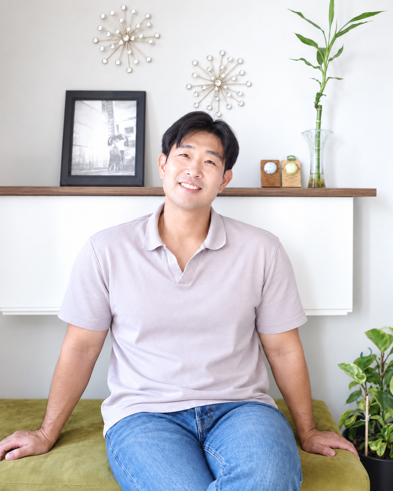

Mechanical engineer working across physical modeling, robotics, sensing, computation, control, and quantitative system validation.
I am a mechanical engineer working at the intersection of physical modeling, robotics, sensing, computation, and control. My background spans experimental mechanical engineering, system dynamics, autonomous systems, robotics research, and engineering analysis. My academic experience includes mechanical engineering at Pusan National University, graduate research at the University of Victoria, and doctoral-level coursework and robotics research at the University of Waterloo.
Across these fields, my work has consistently focused on the same engineering problem: understanding a physical system well enough to model it, measure it, control it, and validate the resulting conclusions. Whether the problem involves structural dynamics, robotic perception, motion planning, or control, I begin by identifying the governing variables, assumptions, constraints, and interfaces that determine system behavior.
My current work focuses on robotics and autonomous systems, with particular emphasis on connecting analytical models, perception, planning, control, simulation, and software implementation into complete engineering systems. I am especially interested in problems where physical reasoning and computation must be considered together rather than treated as separate disciplines.
I approach simulation and numerical results as models to be examined rather than ground truth to be accepted. When analytical calculations, simulation, or implementation disagree, I first investigate the assumptions, coordinate conventions, boundary conditions, model parameters, and system interfaces that could explain the discrepancy. I prefer independent mathematical, physical, and computational cross-validation before modifying a model simply to produce numerical agreement.
My engineering approach is to define the physical problem and its assumptions first, identify the variables that materially affect system behavior, and then select the analytical, computational, experimental, and software tools appropriate to the problem. I place particular emphasis on quantitative validation, reproducibility, robustness, and clear technical documentation so that an engineering result can be understood, tested, challenged, and reproduced rather than demonstrated only once.
I also use AI tools extensively as part of my engineering workflow for research, implementation, troubleshooting, analysis, and technical documentation. I treat them as tools for accelerating iteration and expanding the search space, while retaining independent responsibility for engineering judgment. Technical claims, assumptions, numerical results, data consistency, and source material are verified before they are incorporated into conclusions or design decisions.
